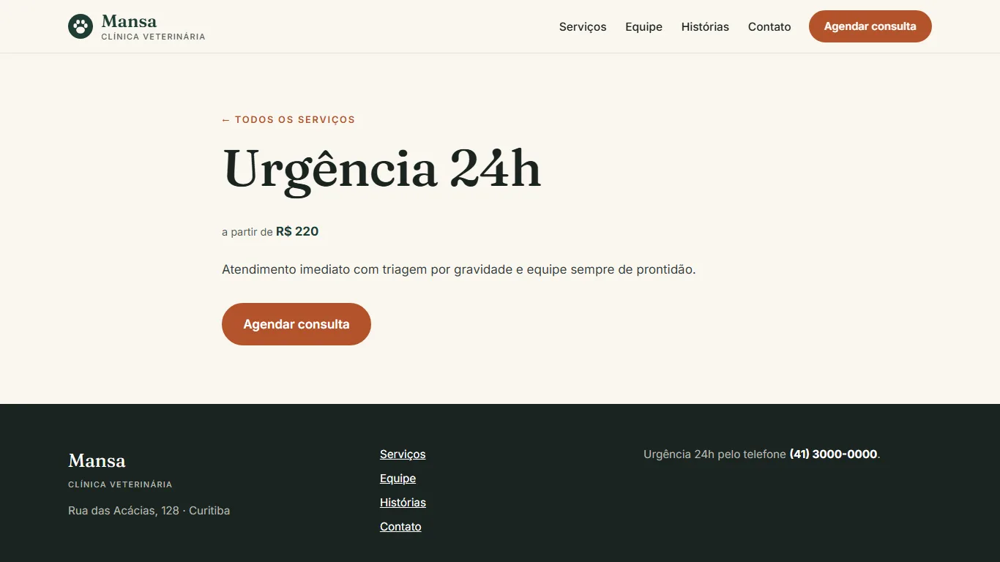

Mansa Vet
Tema WordPress próprio (PHP), feito do zero para uma clínica veterinária fictícia. Sem construtor de páginas: o site se edita pelo painel do WordPress como qualquer outro.

O que tem no tema
- Dois tipos de conteúdoServiços e Profissionais, com campos próprios no painel.
- Editor de blocos e theme.jsonCores, fontes e espaçamentos definidos num lugar só e disponíveis no editor.
- Menus, widgets e CustomizerDois menus, área de widgets e dados de contato editáveis sem tocar no código.
- Formulário seguroEnvio com nonce, campo isca anti-robô, validação e sanitização no servidor.
- Modelos completosInício, lista e página de serviço, 404 e partes reutilizáveis de cabeçalho e rodapé.
- Celular em primeiro lugarMenu adaptado, texto legível, contraste AA e fontes carregadas localmente.
- PHP 8
- WordPress
- theme.json
- Custom Post Types
- Customizer API
- CSS
Uma página do site

Como instalar
No painel do WordPress: Aparência, Temas, Adicionar novo, Enviar tema, e escolha o mansa-vet.zip. O passo a passo, a estrutura de pastas e um Blueprint do WordPress Playground estão no README.